Angenommen  . Es wird angenommen, dass die Ausfall- und Zensierungsmechanismen
unabhängig voneinander sind. Die Hazardfunktion,
. Es wird angenommen, dass die Ausfall- und Zensierungsmechanismen
unabhängig voneinander sind. Die Hazardfunktion,
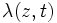
wobei
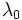
ein Vektor unbekannter Parameter und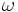
eindeutige Ausfallzeiten angeben, t(1) < t(2) < ? < t(nd) , so dass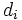
ausfallen, folgt, dass die marginale Likelihood für gut approximiert wird durch:Änn
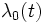
Strata variiert, wobei die Anzahl der Individuen im k-ten Stratum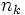
, mit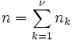
zu erhalten: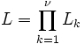
der Anteil der Likelihood für die .Die Überlebensfunktion mit Basisline, die mit einer Ausfallzeit
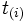
,wobei
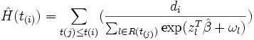
ist die Anzahl der Ausfallzeiten beiwobei
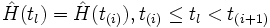
(Logarithmus der marginalen Likelihood). Es gibt zwei Möglichkeiten, um zu testen, ob individuelle Kovariate signifikant sind: Die Differenzen zwischen den Abweichungen der geschachtelten Modelle können mit der entsprechenden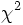
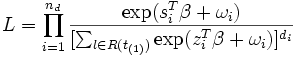
die Summe der Kovariate des Ausfalls von beobachteten Individuen bei der Satz von risikoreichen Individuen vor überlebenden Individuen. Die MLE (Schätzungen der maximalen Wahrscheinlichkeit) von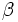
, erhält man durch die Maximierung (1) mit einer Newton-Raphson-Iterationstechnik, die Stufen enthält und die erste und zweite partielle Ableitung von (1) verwendet, die gegeben sind durch (2) und (3) unten: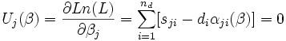
das j-te Element in dem Vektor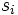
hlich ist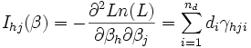
h, j = 1, ? p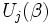
des (h, j) Elements der beobachteten Informationsmatrix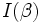
die Varianz-Kovarianzmatrix von unendlich sind.